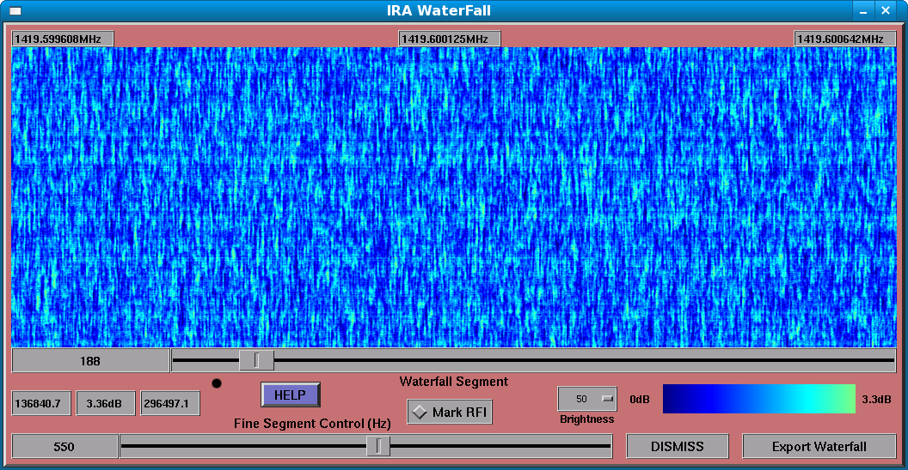

IRA Waterfall Window
The IRA Waterfall windows shows a high-resolution spectrum using a technique known as a “waterfall” display. Each line of pixels in the display shows one seconds worth of spectrum, with relative powers shown as colors, using a color gradient.

The Waterfall Segment Control
This control allows you to choose which segment of the SETI spectrum you wish to display—the SETI spectrum has as many bins as the selected bandwidth, so it would be impossible to display it all at once. Move the slider to select a coarse segment, then use the Fine Segment Control to fine-tune the display.
The Dynamic Range Indicators
Immediately above the Fine Segment Control slider, there are 3 text areas that show the minimum and maximum data values in the displayed waterfall segment, as well as the ratio between these two numbers, in dB.
The Frequency Indicators
Above the waterfall display, there are 3 frequency indicators that indicate the frequency range shown in the waterfall display, with the lowest on the left, the highest on the right, and the middle value, in the middle.
Mark RFI Control
The Mark RFI control allows you to visually determine those sets of waterfall bins that the SETI analyser has determined constitute RFI. This is done by marking those bins with alternating lines of red and dark blue.
Brightness Control
The Brightness control determines the color gradient used to represent relative power values in the waterfall display. Available choices are 100, 75, 66, and 50 percent brightness. It is often useful to reduce the brightness for waterfall segments that have a low dynamic range, otherwise, they appear to be misleadingly bright.
The Color Gradient Display
This display shows the color gradient currently in use, with the corresponding relative power levels, in dB, shown at each end of the gradient display.
The Export Waterfall control
This control allows you to export the current waterfall display as an X Pixmap (XPM) file. It will pop-up a file browser, allowing you to specify the filename and directory for the export XPM file.
DISMISS
This control causes the Waterfall window to close, but waterfall data will continue to be updated.